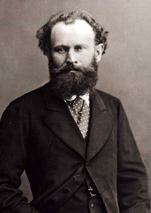

Великие французские импрессионисты XIX века

Эдуард Мане
Эдуард Мане (1832-1883) – французский художник и гравёр, считается одним из основоположников импрессионизма в живописи. Многие его картины стали украшением самых прославленных музеев мира – «Белые пионы», «Бар в «Фоли-Бержер», «Олимпия», «Завтрак на траве», «Лола из Валенсии», «Нана», «В оранжерее», «Музыка в саду Тюильри», «Железная дорога», «В лодке», «Сливовица».
Детство
Эдуард появился на свет 23 января 1832 года в квартале Парижа Сен-Жермен-де-Пре на улице Малых Августинцев в доме № 5.
Его дед по отцовской линии, Клеман Мане, был помещиком, строителем дамб. Папа художника, Огюст Мане, родился во французском городе Женвилье в 1797 году. Он не стал продолжателем семейного строительного дела, а выучился на юриста и состоял на государственной службе. В министерстве юстиции Франции он занимал должность начальника отделения, был советником при дворе, какое-то время работал в апелляционном суде Парижа. Удостоился французской национальной награды – рыцарь Ордена Почётного легиона.
Мама, Эжени-Дезире Фурнье, происходила из интеллигентной семьи. Её отец Жозе-Антуан-Эннемо Фурнье служил на дипломатических должностях, работал консулом в Гётеборге. Крёстным отцом Эжени-Дезире был король Швеции Карл XIII. В январе 1831 года она вышла замуж за Огюста Мане. Ровно через год у них родился первенец Эдуард. Позже семья пополнилась ещё двумя мальчиками Гюставом и Эженом.
Несмотря на хорошее материальное положение, обстановку в доме Мане нельзя было назвать богатой и роскошной. Меблировка, убранство, одежда – всё было простым, умеренным и скромным, с присущим французским вкусом. Эдуард обожал свой дом, к тому времени семья переехала на улицу Мон-Татор.
Его дед по отцовской линии, Клеман Мане, был помещиком, строителем дамб. Папа художника, Огюст Мане, родился во французском городе Женвилье в 1797 году. Он не стал продолжателем семейного строительного дела, а выучился на юриста и состоял на государственной службе. В министерстве юстиции Франции он занимал должность начальника отделения, был советником при дворе, какое-то время работал в апелляционном суде Парижа. Удостоился французской национальной награды – рыцарь Ордена Почётного легиона.
Мама, Эжени-Дезире Фурнье, происходила из интеллигентной семьи. Её отец Жозе-Антуан-Эннемо Фурнье служил на дипломатических должностях, работал консулом в Гётеборге. Крёстным отцом Эжени-Дезире был король Швеции Карл XIII. В январе 1831 года она вышла замуж за Огюста Мане. Ровно через год у них родился первенец Эдуард. Позже семья пополнилась ещё двумя мальчиками Гюставом и Эженом.
Несмотря на хорошее материальное положение, обстановку в доме Мане нельзя было назвать богатой и роскошной. Меблировка, убранство, одежда – всё было простым, умеренным и скромным, с присущим французским вкусом. Эдуард обожал свой дом, к тому времени семья переехала на улицу Мон-Татор.

Портрет родителей Эдуарда Мане
Образование и раннее увлечение живописью
Родители Мане были состоятельными и могли обеспечить сыну достойное образование. Им очень хотелось, чтобы Эдуард продолжил отцовское дело и построил блестящую карьеру на государственной службе. В семилетнем возрасте они отдали мальчика учиться в пансион аббата Пуалу. К учёбе Эдуард оказался абсолютно равнодушным, в связи с этим в 1844 году отец перевёл его на полный пансион в коллеж Роллена.
Единственное, что привлекало юного Мане, - это живопись. В этом увлечении ему способствовал дядюшка Фурнье, который был очень образованным человеком и особенно интересовался искусством. Бывая часто в доме сестры, он дружил с её детьми, по воскресеньям водил их в Лувр. Мужчина сразу обратил внимание на старшего племянника Эдуарда, который не просто рассматривал картины в музее, а с альбомом и карандашом в руках делал какие-то наброски.
Одним воскресным вечером, возвратившись из Лувра, Фурнье попытался уговорить шурина Огюста Мане разрешить Эдуарду посещать в коллеже факультативные курсы рисунка. Отец на эту тему разговаривать не желал, он хотел юридической профессии для всех трёх сыновей. Тогда полковник отправился к директору коллежа мсье Дефоконпре и со своего кармана оплатил дополнительные уроки рисования племяннику.
Единственное, что привлекало юного Мане, - это живопись. В этом увлечении ему способствовал дядюшка Фурнье, который был очень образованным человеком и особенно интересовался искусством. Бывая часто в доме сестры, он дружил с её детьми, по воскресеньям водил их в Лувр. Мужчина сразу обратил внимание на старшего племянника Эдуарда, который не просто рассматривал картины в музее, а с альбомом и карандашом в руках делал какие-то наброски.
Одним воскресным вечером, возвратившись из Лувра, Фурнье попытался уговорить шурина Огюста Мане разрешить Эдуарду посещать в коллеже факультативные курсы рисунка. Отец на эту тему разговаривать не желал, он хотел юридической профессии для всех трёх сыновей. Тогда полковник отправился к директору коллежа мсье Дефоконпре и со своего кармана оплатил дополнительные уроки рисования племяннику.

Удивительно, но эти занятия не вызвали у мальчика интереса. Ему не нравилась академичность преподавания, учитель заставлял копировать гравюры, гипсовые изваяния, орнаментальные рельефы. Не желая изображать головы рыцарей в античных шлемах, Мане рисовал портреты своих одноклассников. По соседству с рисовальным кабинетом находился гимнастический зал, Эдуарду всё время хотелось убежать туда. В занятиях гимнастикой подросток проявлял исключительные способности.
Помимо рисования и гимнастики юного Мане интересовала ещё история. Предмет преподавал молодой профессор М. Валон, который в будущем стал творцом французской Конституции 1885 года. Но иногда и на этих уроках Эдуард прятал под парту книжку, принесенную из дома после выходных, и читал. Его любимое произведение – «Салоны» Дидро.
Насколько сильно Мане любил родной дом, настолько же он ненавидел коллеж. Ему поскорее хотелось отсюда вырваться. Возможно, этот факт повлиял, а быть может его отличная физическая форма и увлечение гимнастическими занятиями привели к решению поступать в мореходную школу. Он с решительностью сказал отцу, что не желает связывать свою жизнь с юриспруденцией.
Помимо рисования и гимнастики юного Мане интересовала ещё история. Предмет преподавал молодой профессор М. Валон, который в будущем стал творцом французской Конституции 1885 года. Но иногда и на этих уроках Эдуард прятал под парту книжку, принесенную из дома после выходных, и читал. Его любимое произведение – «Салоны» Дидро.
Насколько сильно Мане любил родной дом, настолько же он ненавидел коллеж. Ему поскорее хотелось отсюда вырваться. Возможно, этот факт повлиял, а быть может его отличная физическая форма и увлечение гимнастическими занятиями привели к решению поступать в мореходную школу. Он с решительностью сказал отцу, что не желает связывать свою жизнь с юриспруденцией.

Путешествие через Атлантику
Мане окончил коллеж Роллена в 1848 году, особенных успехов ни в чём не проявил. Отец смирился с тем, что старший сын не хочет становиться государственным служащим, и из двух зол выбрал меньшее – уж лучше пусть поступает в морское училище, чем становится художником.
Осенью 1848 года Эдуард сдавал вступительные экзамены в мореходную школу, но провалился. Он решил, что подготовится более основательно и в следующем году предпримет ещё одну попытку поступления. В качестве подготовки ему позволили отправиться в учебное путешествие.
В декабре 1848 года Мане юнгой поднялся на борт парусного судна «Гавр и Гваделупа». Плавание через Атлантический океан и пребывание в Бразилии полностью перевернуло его мировосприятие. Всё воспитание Эдуарда проходило в буржуазной среде под дымчатым парижским небом. А теперь парню открылись солнечные просторы тропических стран, и окружающая действительность засияла разноцветными красками. В своих многочисленных письмах родным он описывал экзотических и красивых бразильянок, делился впечатлениями о карнавале в Рио-де-Жанейро.
В последний третий день бразильского карнавала Эдуард с молодёжью из команды судна отправился в джунгли. Дикая природа поразила его до глубины души. Здесь юношу потрясало всё – маленькие колибри среди ярких цветов; насекомые, ползающие по траве и сверкающие словно драгоценности; спускающиеся с веток лианы и орхидеи. Такого буйства красок он не встречал ещё в своей жизни. Мане понял, что хотел бы научиться переносить всё увиденное в реальную жизнь – на холст.
Осенью 1848 года Эдуард сдавал вступительные экзамены в мореходную школу, но провалился. Он решил, что подготовится более основательно и в следующем году предпримет ещё одну попытку поступления. В качестве подготовки ему позволили отправиться в учебное путешествие.
В декабре 1848 года Мане юнгой поднялся на борт парусного судна «Гавр и Гваделупа». Плавание через Атлантический океан и пребывание в Бразилии полностью перевернуло его мировосприятие. Всё воспитание Эдуарда проходило в буржуазной среде под дымчатым парижским небом. А теперь парню открылись солнечные просторы тропических стран, и окружающая действительность засияла разноцветными красками. В своих многочисленных письмах родным он описывал экзотических и красивых бразильянок, делился впечатлениями о карнавале в Рио-де-Жанейро.
В последний третий день бразильского карнавала Эдуард с молодёжью из команды судна отправился в джунгли. Дикая природа поразила его до глубины души. Здесь юношу потрясало всё – маленькие колибри среди ярких цветов; насекомые, ползающие по траве и сверкающие словно драгоценности; спускающиеся с веток лианы и орхидеи. Такого буйства красок он не встречал ещё в своей жизни. Мане понял, что хотел бы научиться переносить всё увиденное в реальную жизнь – на холст.

Омрачил все впечатления от Рио-де-Жанейро укус змеи. Она ужалила Эдуарда в левую ногу, конечность очень болела и распухла, юнгу отправили на борт судна. Две недели он провёл на пришвартованном паруснике, и, чтобы не мучиться от скуки и безделья, рисовал. Когда в начале лета 1849 года Мане сходил по трапу на берег Франции, его дорожный чемодан был полон карандашных зарисовок. Это путешествие по океану в последующем сыграло не последнюю роль в творчестве художника. В длительном плавании в его душе родилось какое-то особенное ощущение моря. Приблизительно одна десятая часть всех его картин – это морские пейзажи.
Эдуард предпринял ещё одну попытку поступления в мореходное училище, она снова оказалась безрезультатной. Но на это раз у него уже не было прежнего рвения, он даже признался младшему брату Эжену, что на земле чувствует себя спокойнее, чем на борту корабля.
Эдуард предпринял ещё одну попытку поступления в мореходное училище, она снова оказалась безрезультатной. Но на это раз у него уже не было прежнего рвения, он даже признался младшему брату Эжену, что на земле чувствует себя спокойнее, чем на борту корабля.
Нелёгкий путь к искусству
Просмотрев рисунки сына, которые он привёз из путешествия, отец перестал сомневаться в его художественном призвании. Он посоветовал Эдуарду поступить на учёбу в школу изящных искусств Парижа. Но молодой Мане побоялся, что, как и на факультативных уроках рисования в коллеже Роллена, преподавание будет скучным, академическим и жёстким. Поэтому в 1850 году начал брать уроки живописи в мастерской модного на тот период французского художника-академиста Тома Кутюра.

“Нана”
Через несколько лет обучения между Мане и Кутюром стали возникать разногласия. Эдуард категорически не хотел принимать буржуазную направленность стиля в живописи, которая господствовала тогда во Франции. Кутюр предпочитал стилистические и жанровые каноны рисования, а Мане привлекало живое искусство. В 1856 году он покинул мастерскую художника и занялся самообразованием.
Он часто посещал Лувр, где изучал картины известных художников. Также Эдуард много путешествовал по Европе, в результате чего увлёкся старой живописью. В Италии, Испании, Германии, Голландии, Австрии он обошёл все художественные музеи, после которых пытался скопировать работы великих мастеров (так поступает любой начинающий художник). Особенно влияние на его подход к творчеству оказали Тициан, Рембрандт, Веласкес.
К 1858 году Мане приобрёл в Париже известность как художник, подающий надежды. Он стал вхож в различные салоны, где завёл знакомства с представителями высшего общества. Особенно доверительные отношения завязались у него с поэтом Шарлем Бодлером

“Гитарреро”
В 1859 году Эдуард принял решение выставлять свои картины в Парижском салоне. Но тогда его произведение «Любитель абсента» отвергли. Лишь спустя два года критиками благосклонно были приняты две работы Мане «Гитарреро» и «Портрет родителей». Не меньший успех картины имели и у публики. Такое признание принесло художнику неплохие деньги, славу, а самое главное, похвалу отца. Ещё до выставки Огюст Мане гордо показывал гостям картину, где сын изобразил своих пожилых родителей.
Нелёгкий путь к искусству
В 1860-х годах в творчестве Эдуарда преобладали испанские мотивы:

“Алабамы”

“Лола из Валенсии”

“Мертвый тореадор”
Обращался он к религиозным сюжетам («Мёртвый Христос») и к тематике современной истории («Расстрел императора Максимилиана»).
В 1863 году картины, которые были отвергнуты критиками от участия в официальном Салоне, были выставлены в соседнем Дворце промышленности. Это мероприятие назвали «Салон отверженных», а его главной сенсацией стала работа Мане «Завтрак на траве». Это теперь полотно считается шедевром импрессионизма, а тогда оно снискало скандальную славу.
В 1863 году картины, которые были отвергнуты критиками от участия в официальном Салоне, были выставлены в соседнем Дворце промышленности. Это мероприятие назвали «Салон отверженных», а его главной сенсацией стала работа Мане «Завтрак на траве». Это теперь полотно считается шедевром импрессионизма, а тогда оно снискало скандальную славу.

“Завтрак на траве”
Критики возмущались представленной на картине обнажённой женщиной. Мало того, что она сидит в компании одетых мужчин, ведущих беседу, так ещё и бесстыдно смотрит на зрителей, не стесняясь своей наготы. Такие отзывы не обидели художника, а, наоборот, раззадорили. В том же году он написал картину «Олимпия», которая вызвала ещё больше споров. Критики назвали её вульгарной и непристойной.
После такой травли живописец сменил творческую тематику и стал писать портреты, сцены на скачках, натюрморты, какие-то важные происходящие события:
После такой травли живописец сменил творческую тематику и стал писать портреты, сцены на скачках, натюрморты, какие-то важные происходящие события:

«Букет в хрустальной вазе»

«Женщина перед зеркалом»

«Большой канал в Венеции»

«Бегство Рошфора»
В 1870-х годах художник создал свои самые светлые полотна:

«Бар в Фоли-Бержер»

«Натюрморт с лососем»

«Завтрак в мастерской»

«Бар в Фоли-Бержер»

«Бар в Фоли-Бержер»

«Женщина с попугаем»
Личная жизнь
В 1863 году Эдуард сочетался браком с голландской пианисткой Сюзанной Леенхофф. Они познакомились, когда Сюзанна преподавала уроки музыки его младшим братьям. Их роман длился больше десяти лет, в результате которого в 1851 году родился мальчик Леон. Существует ещё одна версия, согласно которой Сюзанна была любовницей отца Мане и именно от него родила сына. Как бы там ни было, а Эдуард действительно женился на ней, только когда умер отец.

«Мадам Мане на синей софе»
Был в жизни художника и страстный роман с натурщицей Викторией Мёран, с которой он писал свои самые знаменитые полотна.
Смерть
В начале осени 1879 года у Эдуарда случился первый приступ ревматизма. При доскональном медицинском обследовании врачи диагностировали у художника атаксию (это болезнь, при которой теряется координация мышечных движений). Заболевание быстро прогрессировало, что ограничивало творческие возможности живописца. За три года болезнь развилась настолько, что Эдуард оказался прикованным к постели. За ним ухаживал сын Леон.
Весной 1883 года у художника началась гангрена левой ноги, ему ампутировали конечность. Через одиннадцать дней, 30 апреля 1883 года, он умер. Его могила находится на кладбище Пасси в Париже
Весной 1883 года у художника началась гангрена левой ноги, ему ампутировали конечность. Через одиннадцать дней, 30 апреля 1883 года, он умер. Его могила находится на кладбище Пасси в Париже

Клод Моне
Оскар Клод Моне ( 1840─1926) — выдающийся французский живописец-новатор, один из основателей художественного направления импрессионизм. Он по-новому стал изображать цвета на картинах, полностью отказавшись от черной тени.
Моне стремился отобразить сиюминутное впечатление от происходящего, желая остановить время хотя бы на мгновение. Его глубина понимания и отражения естественных тонов природы до сих пор остается никем не превзойденной.
Моне стремился отобразить сиюминутное впечатление от происходящего, желая остановить время хотя бы на мгновение. Его глубина понимания и отражения естественных тонов природы до сих пор остается никем не превзойденной.
Детство и юность
Клод Моне появился на свет 14 ноября 1840 года в Париже в семье бакалейщика. Но здесь он провел только самое раннее детство, так как в 1845 году семья переехала в нормандский город Гавр, где пройдут его оставшиеся детские годы. В школе будущий великий художник ничем особо не блистал, кроме уроков рисования. Особенно хорошо у него получались карикатуры, которые пользовались определенным успехом. Они продавались в местном художественном салоне по 20 франков.
Однако отец Адольф не особо радовался этим успехам, так как рассчитывал увидеть Клода продолжателем своего дела. Но юноше удалось отстоять право самому выбирать свой жизненный путь и в этом ему помогла родная тетя, взявшая на себя опеку над сыном после смерти в 1857 году его матери. Тем более она сама неплохо рисовала на любительском уровне.
В это время Моне знакомится с известным художником, страстным поклонником пленэра Эженом Буденом, который раскрыл ему некоторые секреты живописной работы с натуры. Работая вместе с наставником, юный Клод откроет свое истинное предназначение — писать картины на природе. «У меня словно пелена спала с глаз», — сказал Моне.
Однако отец Адольф не особо радовался этим успехам, так как рассчитывал увидеть Клода продолжателем своего дела. Но юноше удалось отстоять право самому выбирать свой жизненный путь и в этом ему помогла родная тетя, взявшая на себя опеку над сыном после смерти в 1857 году его матери. Тем более она сама неплохо рисовала на любительском уровне.
В это время Моне знакомится с известным художником, страстным поклонником пленэра Эженом Буденом, который раскрыл ему некоторые секреты живописной работы с натуры. Работая вместе с наставником, юный Клод откроет свое истинное предназначение — писать картины на природе. «У меня словно пелена спала с глаз», — сказал Моне.

Клод Моне появился на свет 14 ноября 1840 года в Париже в семье бакалейщика. Но здесь он провел только самое раннее детство, так как в 1845 году семья переехала в нормандский город Гавр, где пройдут его оставшиеся детские годы. В школе будущий великий художник ничем особо не блистал, кроме уроков рисования. Особенно хорошо у него получались карикатуры, которые пользовались определенным успехом. Они продавались в местном художественном салоне по 20 франков.
Однако отец Адольф не особо радовался этим успехам, так как рассчитывал увидеть Клода продолжателем своего дела. Но юноше удалось отстоять право самому выбирать свой жизненный путь и в этом ему помогла родная тетя, взявшая на себя опеку над сыном после смерти в 1857 году его матери. Тем более она сама неплохо рисовала на любительском уровне.
В это время Моне знакомится с известным художником, страстным поклонником пленэра Эженом Буденом, который раскрыл ему некоторые секреты живописной работы с натуры. Работая вместе с наставником, юный Клод откроет свое истинное предназначение — писать картины на природе. «У меня словно пелена спала с глаз», — сказал Моне.
Однако отец Адольф не особо радовался этим успехам, так как рассчитывал увидеть Клода продолжателем своего дела. Но юноше удалось отстоять право самому выбирать свой жизненный путь и в этом ему помогла родная тетя, взявшая на себя опеку над сыном после смерти в 1857 году его матери. Тем более она сама неплохо рисовала на любительском уровне.
В это время Моне знакомится с известным художником, страстным поклонником пленэра Эженом Буденом, который раскрыл ему некоторые секреты живописной работы с натуры. Работая вместе с наставником, юный Клод откроет свое истинное предназначение — писать картины на природе. «У меня словно пелена спала с глаз», — сказал Моне.
На пути к славе
Натура художника требовала продолжения учебы, и Клод поступил в университет на факультет искусств, но быстро разочаровался в нем по причине не удовлетворявших его подходов к живописи. Вместо этого он направляется в мастерскую известного представителя академического искусства Ш. Глейра, где тоже особо ничему не научился, так как здесь предпочтение отдавалось полотнам на мифологические сюжеты. Подходы Моне к живописи Глейр не принял и довольно резко осудил. Зато здесь он познакомился с плеядой талантливых молодых художников. Среди них были О. Ренуар, А. Сислей и Ф. Базиль.
В 1863 году они начали писать с натуры в лесу Фонтебло под Парижем. Именно здесь из-под его пера выходит картина «Дорога в Шайи». Это еще не шедевр, перевернувший мировое изобразительное искусство, но уже заявка на что-то большее, нежели просто академический пейзаж.
В 1863 году они начали писать с натуры в лесу Фонтебло под Парижем. Именно здесь из-под его пера выходит картина «Дорога в Шайи». Это еще не шедевр, перевернувший мировое изобразительное искусство, но уже заявка на что-то большее, нежели просто академический пейзаж.

Начало импрессионизма
В 1866 году бедный Моне, регулярно просивший в долг у друзей, приступает к работе над картиной «Завтрак на траве». Это была его версия одноименной картины Э.Мане, которую он решил переплюнуть, сделав полотно в 4 раза больше. Клод стремился написать картину до открытия салона, но из-за поврежденной ноги сделать это не успел, поэтому до нас дошли лишь два фрагмента. Художник попытался поместить фигуры на естественном фоне, сделав акцент на природные объекты. Вместо нее на салоне была представлен портрет «Женщина в зеленом», моделью для которого выступила будущая жена Моне К.Донсье. Эта картина пользовалась большой популярностью, позволив забыть о привычном голоде.
Следующая картина «Женщина в саду» создавалась полностью на пленэре, для чего живописец вырыл специальную траншею, чтобы двухметровое полотно могло перемещаться вверх-вниз. Во время написания он долго ожидал нужного освещения, и только после этого приступал к работе. Моне был убежден, что картина должна быть выполнена на основе определенной световой схемы. Несмотря на все старания, жюри салона 1867 года отклонило эту работу.
Рубеж 60─70 годов XIX века Моне проведет вновь в привычной бедности, часто переезжая в поисках лучшей доли. Живший неподалеку О. Ренуар даже воровал хлеб у собственной матери, чтобы накормить семью друга.
Следующая картина «Женщина в саду» создавалась полностью на пленэре, для чего живописец вырыл специальную траншею, чтобы двухметровое полотно могло перемещаться вверх-вниз. Во время написания он долго ожидал нужного освещения, и только после этого приступал к работе. Моне был убежден, что картина должна быть выполнена на основе определенной световой схемы. Несмотря на все старания, жюри салона 1867 года отклонило эту работу.
Рубеж 60─70 годов XIX века Моне проведет вновь в привычной бедности, часто переезжая в поисках лучшей доли. Живший неподалеку О. Ренуар даже воровал хлеб у собственной матери, чтобы накормить семью друга.

Переворот в живописи
Моне был абсолютно нестудийным художником. Его место было на природе, в окружении воды и деревьев. Это давало ему возможность почувствовать сиюминутность происходящего. Кроме того, он восхищался красотой естественного освещения и старался максимально естественно передать его на своих полотнах.
Летом 1869 года вместе с Ренуаром Моне рисует в Бужевиле. Новые картины, написанные крупными мазками, выхватывают из потока времени мимолетное впечатление, преподнося зрителю важные детали происходящего. Художник находит новый подход к изображению цвета, отказавшись от использования смешанных оттенков и работая только с чистыми цветами. Это открытие повлекло за собой еще одну находку — эффект цвета во многом зависит от окружающих оттенков. Теперь Моне совершенно по-другому работает с тенью. Если раньше ее писали в основном темными цветами, то сейчас живописец стал рисовать ее в соответствии с окружающим цветом. В результате появилась совершенно новая живопись, основанная на убеждении, что тень не бывает черной.
После начала франко-прусской войны Моне переезжает в Англию, чтобы избежать армейского призыва, ведь он был убежденным противником Наполеона III. Здесь он знакомится с продавцом картин Полем Дюран-Рюэлем, который станет одним из его лучших друзей. Он купил большую часть его картин, что позволило после возвращения на родину приобрести домик в Аржантее, где Моне проживет до 1878 года. Это один из счастливых периодов жизни живописца, нашедший воплощение в серии замечательных картин — «Паруса в Аржантее», «Впечатление. Восходящее солнце», «После ланча», «Красные лодки».
Летом 1869 года вместе с Ренуаром Моне рисует в Бужевиле. Новые картины, написанные крупными мазками, выхватывают из потока времени мимолетное впечатление, преподнося зрителю важные детали происходящего. Художник находит новый подход к изображению цвета, отказавшись от использования смешанных оттенков и работая только с чистыми цветами. Это открытие повлекло за собой еще одну находку — эффект цвета во многом зависит от окружающих оттенков. Теперь Моне совершенно по-другому работает с тенью. Если раньше ее писали в основном темными цветами, то сейчас живописец стал рисовать ее в соответствии с окружающим цветом. В результате появилась совершенно новая живопись, основанная на убеждении, что тень не бывает черной.
После начала франко-прусской войны Моне переезжает в Англию, чтобы избежать армейского призыва, ведь он был убежденным противником Наполеона III. Здесь он знакомится с продавцом картин Полем Дюран-Рюэлем, который станет одним из его лучших друзей. Он купил большую часть его картин, что позволило после возвращения на родину приобрести домик в Аржантее, где Моне проживет до 1878 года. Это один из счастливых периодов жизни живописца, нашедший воплощение в серии замечательных картин — «Паруса в Аржантее», «Впечатление. Восходящее солнце», «После ланча», «Красные лодки».

«Паруса в Аржантее»

«Впечатление. Восходящее солнце»

«После ланча»
Интересно, что в отличие от многих предшественников Моне в одинаковой манере изображает небо, воду и окружающий пейзаж, не разделяя их стилистически. Чтобы более точно изобразить реку, Моне создает плавающую мастерскую, которую помещал в нужном месте, ставя на якорь.
В 1874 году в Париже прошла выставка работ импрессионистов, так называемого «Анонимного общества», где одним из критиков и было дано название этому направлению, тождественное наименованию картины «Впечатление».
В 1874 году в Париже прошла выставка работ импрессионистов, так называемого «Анонимного общества», где одним из критиков и было дано название этому направлению, тождественное наименованию картины «Впечатление».
Жизнь в Живерни
Поднакопив определенное состояние, Моне доверяет ведение своих финансовых дел бизнесмену Э. Гошеде, однако тот вскоре обанкротился. Это вынудило объединить оставшиеся капиталы двух семей и переехать в небольшую деревушку Ветей. К несчастью, умирает любимая жена Камилла, и Клод остается один с двумя сыновьями. Вскоре у него завязывается роман с Алисой Гошеде, косвенным признаком которого служит отъезд ее мужа из Ветей, однако официально они узаконят отношения только после смерти Эрнеста.
В 1883 году семейство Моне перебирается в Живерни — деревню на берегу Сены. К этому времени Клод уже был преуспевающим художником, скопившем неплохое состояние. Часть его он направил на расширение своего любимого сада, который станет присутствовать на многих полотнах этого творческого периода. Клод начинает работать в интересной технике, занимаясь написанием нескольких полотен одновременно. Этим он пытался передать освещение и состояние вида в кратчайшее время, зачастую заканчивая писать картину всего за полчаса.
В 1883 году семейство Моне перебирается в Живерни — деревню на берегу Сены. К этому времени Клод уже был преуспевающим художником, скопившем неплохое состояние. Часть его он направил на расширение своего любимого сада, который станет присутствовать на многих полотнах этого творческого периода. Клод начинает работать в интересной технике, занимаясь написанием нескольких полотен одновременно. Этим он пытался передать освещение и состояние вида в кратчайшее время, зачастую заканчивая писать картину всего за полчаса.

Моне интересуют многообразные состояния природы, которые отличаются в зависимости от типа погоды и времени суток. В результате он создает серию полотен-вариаций на одну сюжетную тему, но с разным содержанием. Ярким примером этому служит серия картин о мысе Антиб, который художник успел изобразить утром, после полудня, осенью, летом и весной.
Клод Моне прожил долгую жизнь, пережив обоих жен и старшего сына Жана. После перенесенной операции на глаза из-за развившейся катаракты он сумел вновь обрести зрение, но стал по-другому воспринимать цвета. Поэтому его поздние картины были написаны в новой манере. К примеру, «Водные лилии» изображены голубоватыми, хотя обычный человек воспринимает их белыми.
Скончался великий художник-новатор 5 декабря 1926 года в Живерни, где провел последние 30 лет своей жизни и похоронен на местном церковном кладбище.
Клод Моне прожил долгую жизнь, пережив обоих жен и старшего сына Жана. После перенесенной операции на глаза из-за развившейся катаракты он сумел вновь обрести зрение, но стал по-другому воспринимать цвета. Поэтому его поздние картины были написаны в новой манере. К примеру, «Водные лилии» изображены голубоватыми, хотя обычный человек воспринимает их белыми.
Скончался великий художник-новатор 5 декабря 1926 года в Живерни, где провел последние 30 лет своей жизни и похоронен на местном церковном кладбище.

Огюст Ренуар
Огюст Ренуар (25.02.1841 — 3.12.1919) — один из родоначальников и главных представителей импрессионизма, создававший свои шедевры во второй половине XIX. Ренуар известен как художник-портретист, но работал и в других жанрах — рисовал пейзажи и натюрморты, голую натуру. Живопись мастера характерна и узнаваема: каждое произведение словно излучает гармонию и светлую радость. Он не писал батальных сцен, был равнодушен к драме и трагическим сюжетам. На его полотнах цветут растения, купаются в небесах пышные кроны деревьев, танцуют люди.
Рождение и семья
Пьер Огюст Ренуар родился 25 февраля 1841 г. во французском городе Лимож. Его отец Леонард работал портным, мать швеей. Многодетная семья была небогатая, но дружная и любящая.
Огюст с детства был одарен множеством талантов. Один из которых – прекрасный голос. Когда мальчику было 3 года, семья переехала в Париж. Здесь Огюст поступил в церковный хор, регентом которого был Шарль Гуно. Известный композитор был поражен красотой детского голоса, и предложил родителям Ренуара отдать сына в музыкальную школу. Но мальчик предпочел пению живопись. Чтобы помогать семье, в 13 лет, после обучения в школе христианских братьев, юный Огюст Ренуар поступил на службу на фабрику фарфора «Леви Бразерс», где расписывал тарелки, горшки и вазы. Вечером мальчик посещал школу искусств, изучая там живопись. Когда в 1858 г. предприятие разорилось, Огюст нашел другие способы заработка: расписывал жалюзи; стены кафе; навесы. Работы он проводил, копируя манеру мастеров эпохи Рококо. По мнению искусствоведов, в будущем этот опыт существенно повлиял на творчество живописца. Считается, что именно у художников XVIII века он позаимствовал веселое, беззаботное отношение к жизни и теплые, яркие краски. Уже в зрелом возрасте Ренуар писал, что, родись он в интеллектуальной семье, годы пришлось бы потратить на то, чтобы увидеть вещи такими, какие они есть. «Да еще руки ничего не умели бы делать» – шутил художник.

Портрет мадам Ренуар, 1860 г
Учеба
Самой лучшей школой живописи для себя Ренуар считал Лувр. Туда он, будучи подростком, бегал в обед, работая на фарфоровой фабрике. Важное значение Огюст придавал насмотренности, которая, по его мнению, возникает лишь тогда, когда ты обладаешь суммарным опытом просмотра огромного числа картин. Часть заработков юноша откладывал на учебу, мечтая идти дальше простого копирования чужой манеры письма. В 1862 году Ренуар поступает в Парижскую школу изящных искусств и в студию известного живописца Шарля Глейра, сторонника академической традиции, доминирующей тогда во Франции. Суть этой традиции в том, что картины должны быть большими, темными по тону, сюжет позаимствован из мифологии или истории. В студии Глейра Ренуар учился с Фредериком Базилем и Клодом Моне. Позже к ним присоединился Альфред Сислей. Одаренные и яркие личности, которые в своих рассуждениях они стали ниспровергателями всего прошлого. Вопреки канонам классической школы и мнению Глейра, молодые художники выходили на улицу и рисовали под открытым небом. Излюбленным их местом стал лес Фонтенбло.

Художник Жюль ле Кер гуляет с собакой в лесу Фонтенбло, 1866
В 1864 году студия Глейра прекратила работу. В этот же год закончилось обучение художника в школе изящных искусств
Творчество
Творчество мастера принято делить на периоды. Так, 60-е годы XIX века – для Огюста это время поиска своей манеры письма. Огромное влияние на него оказывает реалистичная манера Жана Гюстава Курбе. В те годы в художественной среде активно обсуждались проблемы искусства. Ренуар мало участвовал в подобных дискуссиях, считая, что основная задача художника – рисовать. Мечтая выставляться, в начале своей карьеры Огюст Ренуар стремится, чтобы его картины соответствовали формату Салона – официальной, организованной государством выставки. Но не найдя места в системе Салона, он понял, что идеи ведут его в другую сторону. И в конце 60-х годов художник оказался в лагере импрессионистов.
За свою жизнь Огюст Ренуар создал свыше 6000 художественных работ. Это около 2 работ в неделю – невиданная скорость для художника. Но еще более удивительно, что качество его работ от этого не становилось хуже Летом 1869 г. Огюст Ренуар и Клод Моне, работая вместе, стали применять фрагментарные отрывистые мазки, наполнявшие их работы ощущением жизни и движения. Художники много экспериментируют с цветом, светом и тенью на полотнах. Многие историки искусств называют 1869 год датой рождения импрессионизма. В 1870 г. почти на год Ренуар был мобилизован на фронт, где, к счастью, не получил ранений. Уже на следующий год он вернулся к живописи. В 1874 году в Париже состоялась независимая Первая выставка импрессионистов, на которой наравне с работами Моне, Писсарро, Сислея, Дега и Сезана были выставлены картины Огюста Ренуара. Работы импрессионистов вызвали негативную реакцию критиков, но мастеру все же удалось продать 3 картины. Среди них была «Ложа», сейчас одна из самых известных картин художника.
За свою жизнь Огюст Ренуар создал свыше 6000 художественных работ. Это около 2 работ в неделю – невиданная скорость для художника. Но еще более удивительно, что качество его работ от этого не становилось хуже Летом 1869 г. Огюст Ренуар и Клод Моне, работая вместе, стали применять фрагментарные отрывистые мазки, наполнявшие их работы ощущением жизни и движения. Художники много экспериментируют с цветом, светом и тенью на полотнах. Многие историки искусств называют 1869 год датой рождения импрессионизма. В 1870 г. почти на год Ренуар был мобилизован на фронт, где, к счастью, не получил ранений. Уже на следующий год он вернулся к живописи. В 1874 году в Париже состоялась независимая Первая выставка импрессионистов, на которой наравне с работами Моне, Писсарро, Сислея, Дега и Сезана были выставлены картины Огюста Ренуара. Работы импрессионистов вызвали негативную реакцию критиков, но мастеру все же удалось продать 3 картины. Среди них была «Ложа», сейчас одна из самых известных картин художника.

Ложа, 1873 г
В течение нескольких лет работы импрессиониста подвергались жестокой критике. Он не отчаивается и продолжает творить. В эти годы Огюст предлагает новую импрессионистскую палитру цвета, известную как «Радуга». Прекрасно демонстрируют ее использование работы «Обнаженная в солнечном свете» и «Качели».

В 1877 г. на 3-й выставке импрессионистов Огюст Ренуар выставляет полотно «Бал в Мулен де ля Галет». Картина стала главным выражением идей импрессионизма и новым этапом в творческой жизни художника. После картины «Мадам Шарпантье со своими детьми» такие портреты вошли в моду. Художник становится самым востребованным портретистом того времени. Его особенностью была способность очень быстро писать. Именно поэтому Огюсту прекрасно удавались портреты детей. В 1881 году Ренуар посетил Италию, впервые познакомившись с работами мастеров Возрождения. Художник понял, что его картинам не хватает технического совершенства. Это понимание повлияло на его работы, что заметно по более четким линиям и мелким мазкам на полотнах. Так как источником вдохновения для живописца тогда служили работы Жана Энгра, этот период его творчества некоторые искусствоведы называют «Энгровским».
Известные картины, написанные в это время:
Известные картины, написанные в это время:
 1.png)
“Зонтики”

“Танец в городе”

“Большие купальщицы”
Начало 1890-х годов было успешным для Огюста Ренуара. Состоялась его персональная выставка, музей Люксембурга приобрел его картину. В это же время художник снова несколько меняет свою живописную манеру, добавляя переливчатость цветов. Потому период его творчества с 1891 по 1903 гг. называют «перламутровым». В это время были написаны «Весна», «Сын Жан», «Спящая женщина». Последним периодом в творчестве Огюста стал «красный», который ознаменовался пристрастием мастера к теплым красным и розовым оттенкам.
Были созданы:
Были созданы:

“Прогулка”

“Габриэль в красной блузе”

“Анемоны”
Всю свою жизнь, независимо от живописной манеры, Огюст Ренуар называл себя абсолютно французским художником и продолжателем традиций французской живописи.
Личная жизнь
Худощавый, с тонкими чертами лица, немного нервный и очень подвижный Огюст Ренуар всегда пользовался успехом у женщин. Молва приписывала ему романы с большинством позировавших для его картин моделей. Серьезных и длительных романов в судьбе художника было два. В 1865 г. Огюст Ренуар знакомится с 16-летней Лизой Трео. Девушка очень скоро стала любимой моделью художника и его возлюбленной. Их роман длился 7 лет. В этот период Лиза родила дочь, но Ренуар отказался признать отцовство. В итоге мадемуазель Трео оставила художника.

“Лиза с зонтиком”, 1867 г.
В 1880 г. живописец встречает Алину Шариго. Она младше Огюста на 18 лет, но в искренности чувств влюблённых ни у кого не возникало сомнений. Алина не разбиралась в живописи, но обожала наблюдать за работой любимого мужчины. Прожив вместе 10 лет, пара вступила в официальный брак. У Алины и Огюста родилось трое сыновей: Пьер, Жан и Клод. Мадам Ренуар была замечательной хозяйкой, прекрасно готовила и встречала друзей мужа. Даже в те годы, когда семья испытывала финансовые трудности, двери дома Ренуаров были открыты для многочисленных гостей. К супруге художника тепло относились все его друзья, включая даже известного женоненавистника Дега. Алина окружила мужа уютной заботой, создав идеальные условия для работы. В 1903 г. семья переехала в имение «Колетт» в небольшом городе Кань-сюр-Мер, где Алина организовала супругу настоящий творческий оазис.

“Лиза с зонтиком”, 1867 г.
Но даже при такой замечательной жене Ренуар умудрялся заводить романы с моделями. Слишком увлекающейся он был натурой, любил жизнь и прекрасное в ней. Художник не раз признавался, что не может писать модель, если не влюблен в нее. На его отношения с женой эти мимолетные связи никак не влияли. Алина Шариго скончалась на 4 года раньше мужа, в 1915 году. На ее ранний уход повлияли переживания за участвующих в войне сыновей, двое из которых были тяжело ранены.
Последние годы жизни
В 1897 г. при падении с велосипеда Огюст Ренуар сломал руку. Перелом спровоцировал ревматизм. С этого времени жизнь художника омрачилась болезнями. В 1912 г. у Ренуара случился приступ паралича. Несмотря на 2 операции, до конца дней он остался прикованным к инвалидному креслу. Но, постоянные физические страдания не отразились на настроении его картин, по-прежнему излучающих счастье и солнечный свет. Художник работал до последних дней жизни. Будучи парализованным 78-летним стариком, Ренуар писал одним пальцем, к которому прикрепляли кисти. Не стало «живописца счастья» 3 декабря 1919 г. Работа была смыслом существования художника с детства и до кончины. Последнюю картину Ренуар закончил за несколько часов до смерти. Написанные не с натуры «Вальдшнепы», пожалуй, единственная трогательно-грустная картина великого мастера кисти.